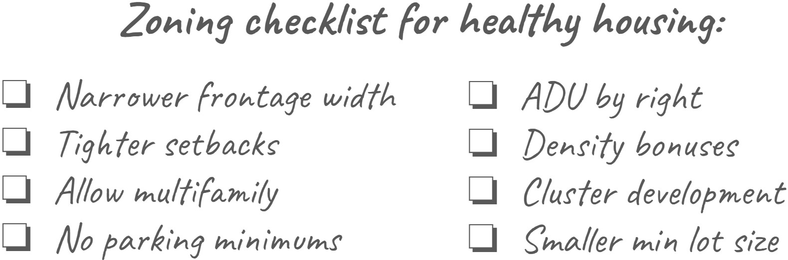

Honolulu Housing Plan Map |Overview | Indicators | Solutions | Next steps
Honolulu Housing Plan Map |Overview | Indicators | Solutions | Next steps
Honolulu Housing Plan Map |Overview | Indicators | Solutions | Next steps
This dashboard was created by CommunityScale for the County & City of Honolulu. The objective of this dashboard is to outline the plan's objectives and priorities, share key observations and findings about housing, and introduce possible solutions to increase housing production and address affordability challenges.
 Overview
OverviewThe lack of housing impacts us as a community. Increasing the supply of housing for all income levels must be considered, as a continuum of need exists, ranging from homeless shelters and permanent supportive housing, to low-income rentals, workforce housing, and single-family homes and condos for those pursuing the American dream of homeownership.
This plan is intended to help stakeholders and residents understand the details and nuances of the city’s housing challenge, coordinating with other City departments and governing datasets and metrics to provide a strategic roadmap to unlock opportunities for expanded housing production across the spectrum of affordability - and especially among income levels that have been underserved by current policies and market activity.
This plan supports Honolulu's efforts to address its housing needs by ...:
 Indicators
IndicatorsHonolulu’s household population has grown modestly since 2010. In terms of relative income levels, most of the growth has been concentrated among households earning >140% AMI. Looking forward, the fastest growing household income group is >140% AMI, followed by the 80-100% AMI group. The ratio of households below 60% has been decreasing since 2013 and will not result in net new households if trends continue. However, households at lower levels of AMI are cost burdened, and new affordable housing would address that need. .
Table
Here's some information about that table.
Households are cost burdened when paying more than 30% of their income on housing costs. They are considered severely cost burdened when these costs exceed 50% of their income. For renters, this includes lease rent and utilities. For homeowners, this includes mortgage costs, property taxes, insurance, utilities, and any condo fees.
The chart below compares typical home values with the price affordable to a household earning the median household income. A wider gap means higher barrier to entry for first-time homebuyers and increased risk of displacement for current homeowners. A home is “affordable” if primary ownership costs total less than 30% of a household’s total monthly income. These costs include a range of factors such as: Mortgage interest rate, property tax rate, home insurance, private mortgage insurance, utilities, and condo fees.
Affordability is based on the county’s estimated median income. Actual affordability levels for specific properties vary based on variation in the above variables as well as possible additional costs for some units such as condominium fees.
Just over 1/3 (35%) of O'ahu's workforce is employed in warehousing or service sector jobs. Households with two earners with median-pay service/warehousing sector jobs might need housing affordable at 40-75% AMI levels.
11% of O'ahu jobs are "blue collar"; this includes jobs in manufacturing, construciton, or natural resources. A household with two blue-collar earners might have a household income between 50 and 100% AMI.
31% of O'ahu jobs are in education, healthcare, or the public sector. Incomes within these sectors can vary: A household with two median-pay employees in "eds", "meds", or the public sector could need housing affordable at 50% AMI, or might be able to afford market-rate housing.
22% of O'ahu jobs are in the "knowledge sector" - desk jobs in fields such as tech, finance, or professional services. A two-earner household of median-pay knowledge sector employees can typically afford housing at 110% AMI or above.
The essential workforce is typically within the 60-140% AMI range depending on whether there are one or two income earners in the household. According to IRS data, the average income of Oahu’s approx. 4,000 annual outmigrant households is between 65% and 130% AMI.
Honolulu County’s population is expected to dramatically shift toward older households over the coming years. Between 2010 and 2027, the 65+ age group will grow by over 7,000 households while nearly all other age groups shrink substantially.
This shift is driven by a combination of forces: the resident population is simply getting older; today’s families are having fewer children than previous generations; and an ongoing trend of younger people migrating out of the region and older people migrating in. From a housing perspective, this trend points to growing need for housing units suitable to seniors, including accessible design, fewer bedrooms, proximity to services, and affordability to fixed-incomes.
As the population ages and families have fewer children, local school enrollment has declined in nearly all county districts. More growth is needed - including new families with kids - to keep schools operating efficiently and avoid closures or consolidation.
 Solutions
Solutions
To meet the changing needs of Honolulu County’s current and future households, Honolulu County needs more housing units of a greater variety than currently exist in most local communities. In general, residents need more compact and efficient units suitable to smaller households that are more likely to include seniors. Options should include both rental and ownership across housing types.
While new units are needed throughout the county, a large share should focus in and around Honolulu County’s downtowns and village centers for walkable proximity to services, amenities, and transit connections. New development should include a variety of housing models that complement the county’s current majority of single-family houses, including:

GIven the high cost of construction and limited availability of development sites in many local communities, housing production should also include retrofitting existing structures.

Zoning is one of the most powerful ways to regulate housing development. In some Honolulu County communities, current zoning does not allow many of the housing types that would help address today’s housing shortage and affordability challenge. Other communities have amended their zoning over the years to permit a greater variety of housing options and development models in keeping with evolving need and demand. The most immediate and effective way to unlock opportunities for new housing production is to update local zoning codes to enable a wider range of housing types, such as tiny houses, duplexes, multifamily, mixed-use, adaptive reuse, ADUs and other models better aligned with local needs.
 Next steps
Next steps
Many of the most effective solutions to today’s housing challenges start with new policies at the local level. This requires action and engagement by community members interested in seeing change. To help make a difference, residents should get involved in the policymaking discourse through, for example, joining or contributing to planning boards, advocating at town meetings, participating in local planning activities, and writing letters to lawmakers and newspapers.

Honolulu Mayor’s Office of Housing drives policy and strategy for housing islandwide. The office leads cross-sector collaboration and policy change to stimulate the acquisition, development, and preservation of housing for all of Oahu’s residents, including the creation of pathways from homelessness to housing.
CommunityScale is a pioneering urban planning and spatial data analysis company serving clients across the United States.
Follow CommunityScale on LinkedIn and Twitter/X. This dashboard is open source MIT license.